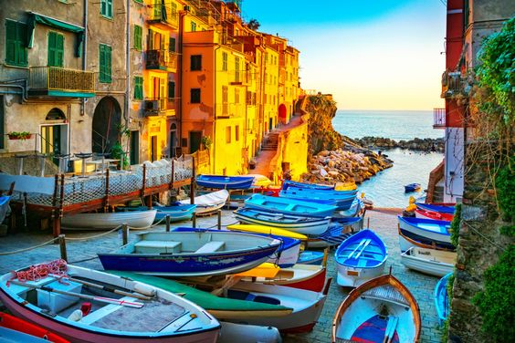
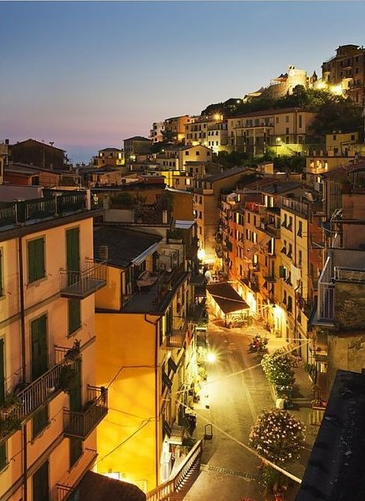

Najjužnije selo Riomaggiore počelo se naseljavati u 8. st. i ime je dobilo jer su prve kuće građene uz rijeku na talijanskom Rio. Selo je poznato po svojim zvonicima. Kuće sela prate usku i danas prekrivenu liniju doline potoka, a karakteristične su po vertikalnoj slici predjela koja se završava u maloj pitoresknoj ribarskoj luci.

Riomaggiore
Via Colombo
Glavna ulica Via Colombo nudi sve, mnogobrojne restorane, slastičarnice, kafiće i trgovine. Ulica izlazi na glavni trg Piaza Vignaioli s kojeg se može spustiti u luku.

Via Colombo
Vino i vinogradarstvo
Riomaggiore je najpoznatiji po proizvodnji vina i vinogradarstvu pa se u 9. mj. održava tradicionalna berba grožđa u spomen na graditelje sela.